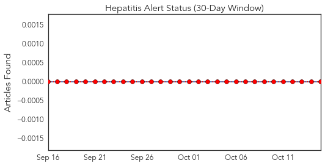
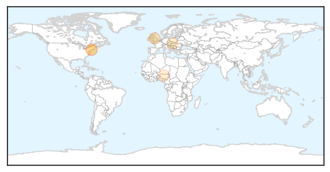
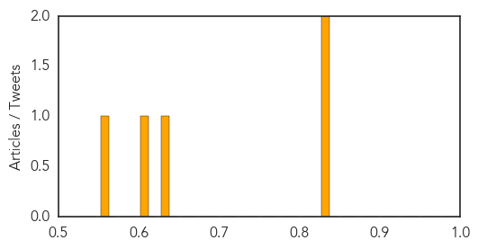

Hepatitis
30-Day Web Trend
2 alerts, 0 warnings

30-Day Twitter Trend
0 alerts, 0 warnings

Article Locations
Article Confidences
Top Articles:
- 0.834
- New study looks closely at the rats of New York
- 0.830
- Rats of New York and the Diseases They Carry
- 0.631
- Dozens of hepatitis A cases appear in Slovakia - PRAGUE POST
- 0.620
- Scientists find 18 new viruses on NYC rats
- 0.564
- Afghanistan Confirms New Polio Cases as Pakistan’s Outbreak Reaches Grim Milestone
Top Tweets:
-
No tweets found for Oct 15, 2014
MERS
30-Day Web Trend
0 alerts, 0 warnings

30-Day Twitter Trend
6 alerts, 0 warnings

Article Locations

Article Confidences

Top Articles:
Top Tweets:
-
No tweets found for Oct 15, 2014